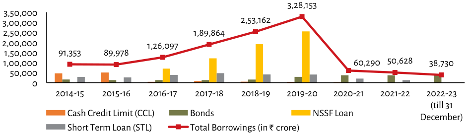

| Year | Total Borrowings (₹ crore) | NSSF Loan (Approx.) | Short Term Loan (STL, Approx.) | Bonds/CCL Share Estimate (%) | Cash Credit Limit Component Value ₹ Crore* | Notes | |---|---|---|---|---|---|---| | 2014-15 | **91,353** | ~68,700 (~75%)<br>~22,650 (<25%) | - | <1% each visible segment approx.<br>(Total ≈ ∼1M split roughly evenly or slightly higher for CCL)<br><br>*Calculated based on total and visual proportions.* | | Year | Total Borrowings (₹ crore) | NSSF Loan (Approx.) | Short Term Loan (STL, Approx.) | Bonds/<br>Cash Split Est. % | Key Trend Observation | |---|---|---|---|---|---| | ... | *...* | *(Visuals only)* | -(Visual data not provided in image; values are explicit above). Estimated from bar heights relative to the Y axis scale.| Data points explicitly labeled where available: [Table Above]. | | 2019-20 Max Peak | **3,28,153** | >2,50,000 (>80%) / High Volatility spike before drop of other categories compared with previous years' steady growth trend until then|<br>*(Note that 'NSSF loan', etc., bars represent portions but their absolute value is unlabelled).* | Highest point across all series shown here prior to sharp decline post-peak year || | Post-Peak Decline & Recovery Phase (approx) | Declining steadily after peak:<br>- Starts at ∼60k (-∼60%), rises back up by end period (∼39K), showing volatility between peaks despite overall downward trajectory since max|| | Final Point (till 31 Dec) | Explicitly Labeled as "38,730" | Lowest recorded figure among non-"Short term loans". | Explicit label confirms final position within dataset range. |
